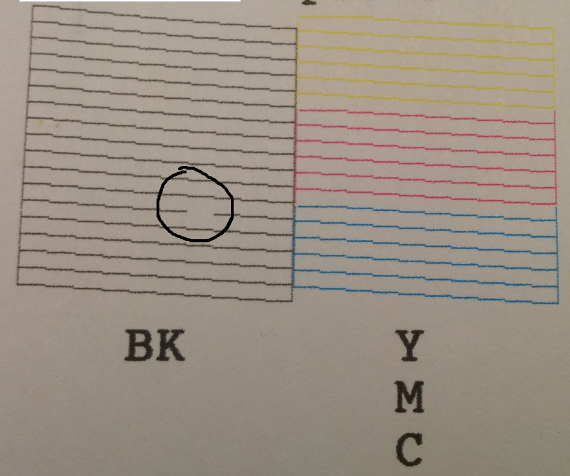
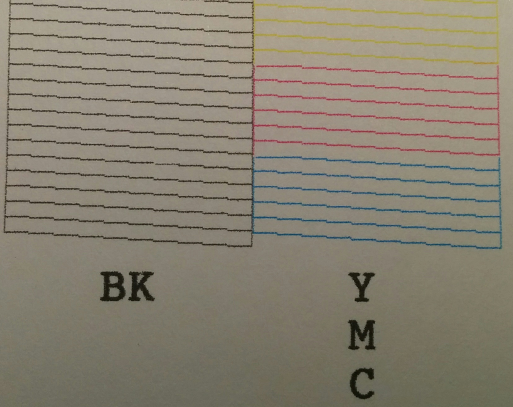

Любой струйный принтер должен печатать как минимум раз в неделю. В противном случае чернила в соплах засыхают и на итоговом изображении видны полосы там, где дюзы забиты.
На превью как раз такая проблема — забита часть сопел.
Что нам может помочь в случае принтера epson? Утилита escputil из пакета gutenprint.
$ sudo dnf install gutenprint
Подразумевается, что принтер у вас установлен и вы на нем уже печатаете, но не очень качественно.
Для начала стоит посмотреть на состояние головы.
$ sudo escputil --nozzle-check --printer-name EPSON_EPSON_XP-330_Series
В качестве printer name передаем имя принтера, которое у него указано в cups. Будет сформировано задание печати и поставлено в очередь.
Можно использовать запись напрямую в порт принтера тем самым минуя очередь печати.
$ sudo escputil --nozzle-check --raw-device /dev/lp0
Устройство немного подумает и выплюнет тестовую сетку в которой каждое сопло или ряд сопел печатают отдельную строку.

Проблемная дюза отмечена — она не пропечатана.
Попытаться исправить работу дюзы можно при помощи подачи на нее большого объема чернил.
$ sudo escputil --clean-head --printer-name EPSON_EPSON_XP-330_Series
Так же, как и в случае с проверкой можно либо отправить задание на очистку через cups, либо напрямую в порт.
Через какое-то время после запуска задания жужжания прекратятся и можно заново проверить состояние головы.
Обратите внимание, что для очистки принтеру может потребоваться бумага — не забывайте его покормить.

После очистки печать работает полноценно.